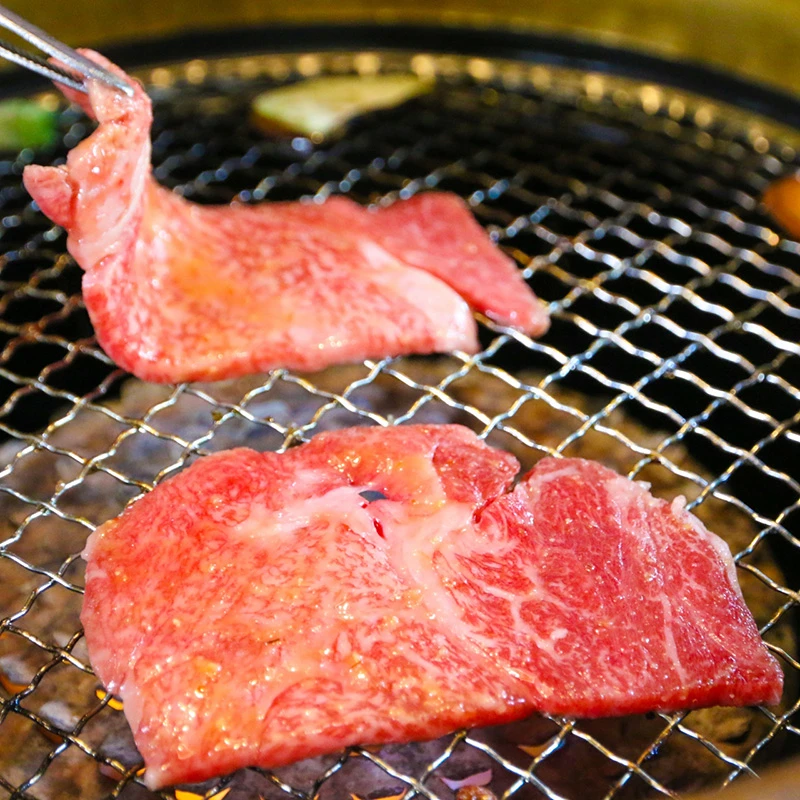

一個人，
也能好好吃一頓飯
一席食地整理全台單人友善餐廳
從一人燒肉、一人火鍋到一人友善咖啡廳
幫你找到真正適合獨自用餐的空間與節奏
探索你的單人用餐方式
不同的餐廳，適合不同的心情。
你可以想吃得熱鬧、吃得安靜。
或者，只是想找個地方慢慢待一會。
不知道怎麼選？
從座位類型、用餐氛圍到停留時間， 一席指南幫你更快判斷什麼樣的餐廳，才真正適合一個人。
- ✔ 吧檯席和單人座位差在哪？
- ✔ 什麼樣的環境適合久坐或放鬆？
- ✔ 哪些餐廳對一個人最友善？
一個人吃飯，也會想分享嗎？
一個人用餐的經驗，不只是吃一頓飯。 也可以被記住、被分享，甚至讓別人因此找到更適合自己的地方。
- ✔ 分享你的單人用餐體驗
- ✔ 看看別人推薦的店家
- ✔ 找到和你一樣喜歡獨處的人